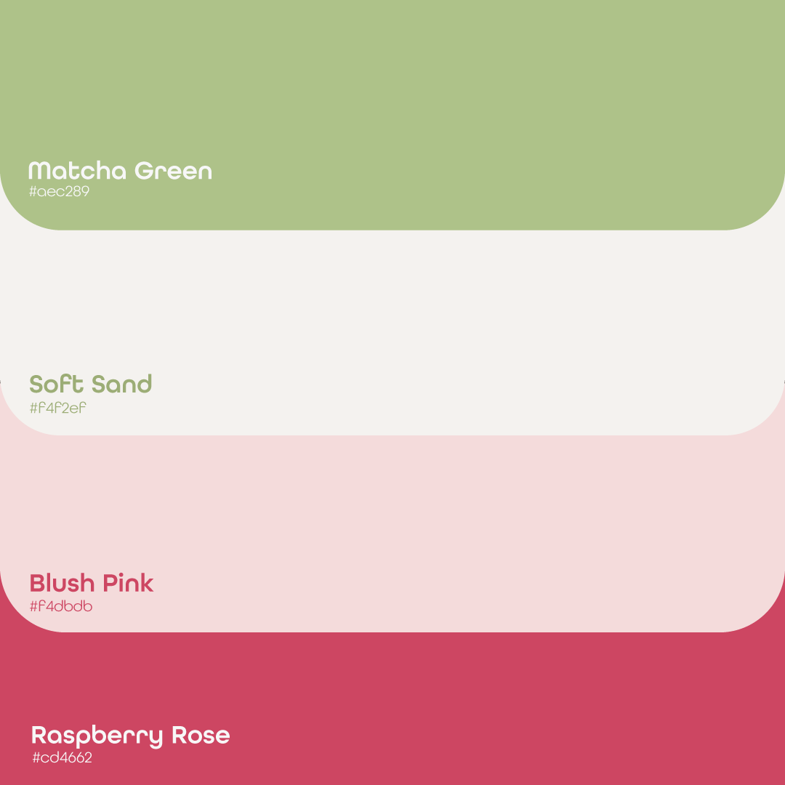
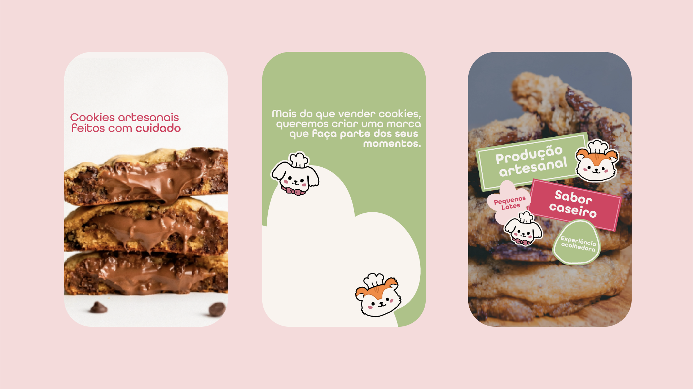

Hinami
Uma identidade delicada e acolhedora para uma marca artesanal, criada para comunicar cuidado em cada detalhe.


Uma marca artesanal com afeto em cada detalhe.
A identidade da Hinami combina personagens ilustrados, tons suaves e uma linguagem próxima para criar uma presença visual acolhedora e memorável.